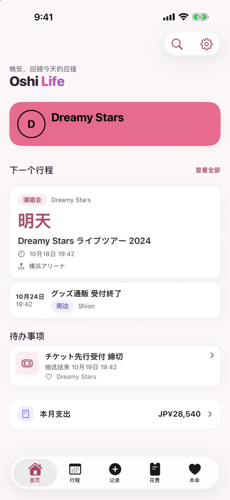
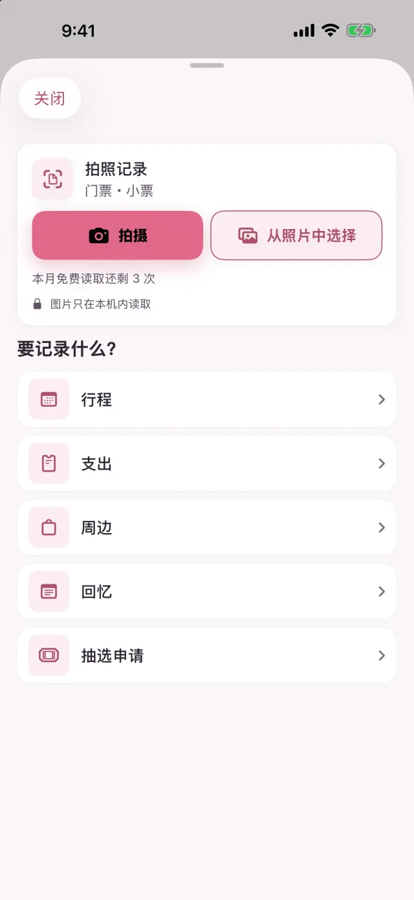
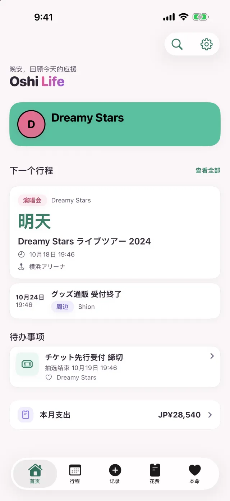
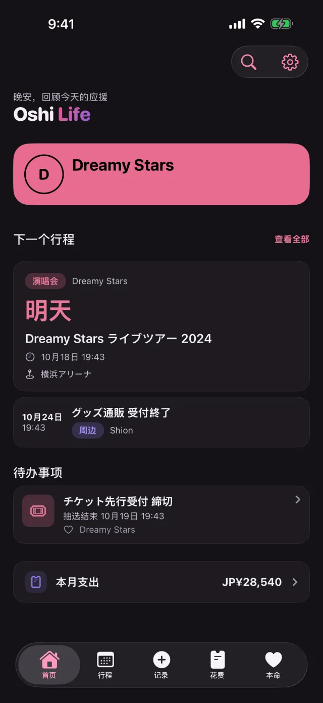
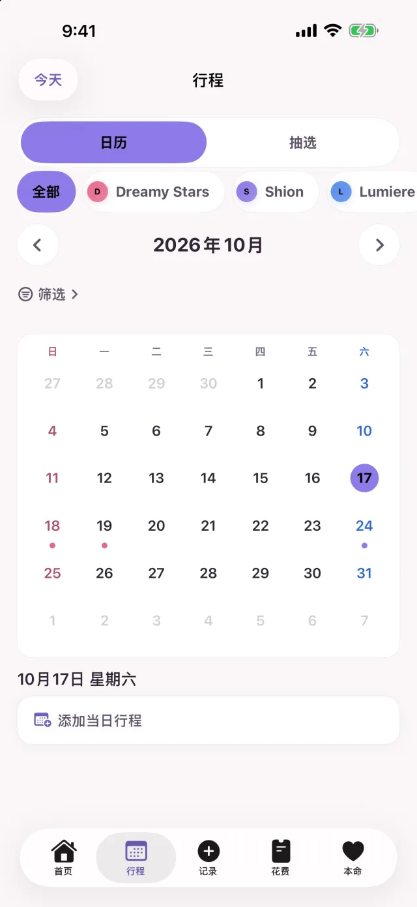
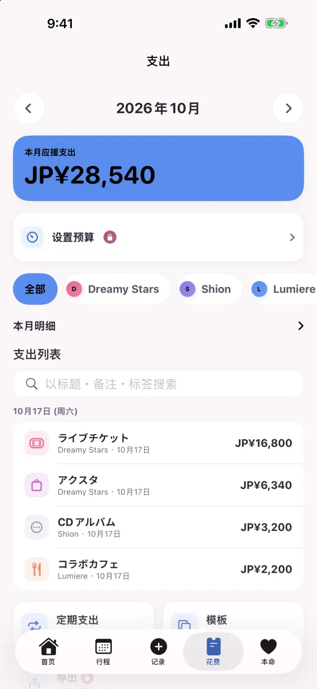
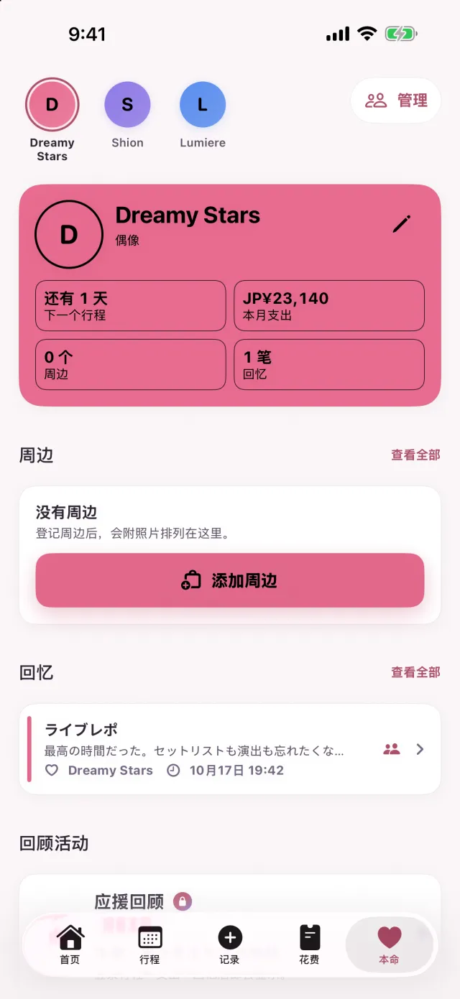

Free
可以免费使用的方案。
| 本命 | 3 位 |
|---|---|
| 行程 | 30 条 |
| 支出 | 50 条 |
| 回忆 | 50 条 |
| 周边 | 50 件 |
| 同时进行的抽选申请 | 1 条 |
| 拍照记录 | 每月 3 次 |
抽选看板建立的行程不计入行程数。落选的申请和已付款的申请，不算作同时进行的申请。
追星记录 App Oshi Life 2.0
拍下门票或小票，就会生成行程、支出或周边的草稿。确认内容后保存，需要手动输入的只有想修改的地方。申请截止、中选公布，还有花在本命身上的钱，都能用一部 iPhone 管理。
拍照记录在 Free 方案中每月最多 3 次（门票和小票合计）。Premium 不限次数。
免费（含 App 内购买）· iOS 17.0 或以上的 iPhone

拍照记录
远征回来，还得把钱包里的小票一张张输入。现在只要拍下来，再确认读取的内容就行。
如果是买了亚克力立牌和毛巾的小票，每个品项会各建立一条周边和一条支出。税费等剩下的差额归入「其他」支出；读不出品项时，就把合计记为一条支出。
读取演出名称、日期时间、场馆、座位和票价，生成行程的草稿。读到票价时，保存行程后还能把票价记为支出。
除了拍照，也可以从照片中选择。把门票当成小票（或把小票当成门票）读取时，可以把同一张图片改按另一种重新读取。
读取在 iPhone 内完成，不会为了读取而把图片或文字传到外部。
Free 方案每月最多 3 次（门票和小票合计）。Premium 不限次数。

本命的颜色和深色模式
按钮、标签和卡片的强调色，会变成当前所选本命的颜色。本命的颜色是粉色就变成粉色，是薄荷色就变成薄荷色。
为每位本命选好颜色后，切换到那位本命时，整个 App 的颜色也会一起改变。
默认跟随 iPhone 的设置切换。也可以在设置的「外观」中固定为浅色或深色。


行程和抽选
报名抽选后，把这条申请登记到 Oshi Life。申请截止、中选公布和付款期限会排进行程，快到时会收到提醒。
输入报名的演出，以及截止和公布的日期时间。
申请截止、中选公布和付款期限会自动加入日历。
记录中选并输入公演日后，会加入演出的行程。
持续记录抽选结果，就能看到目前为止的中选率。
申请截止和付款期限会在前一天提醒，中选公布则在公布时提醒。
除了前一天，申请截止和付款期限还会在 3 天前和当天早上提醒。
在「行程」标签顶部的［日历｜抽选］切换后，申请会分成「申请中」「等待开奖」「待付款」「准备参战」「落选」显示。
演唱会、发售、直播、电视、广播、YouTube、周边等。场馆和本命的名字都能自由输入。

花费
门票、周边、交通费、住宿、餐饮。记录的支出会按本命和分类汇总，在「花费」标签里可以按月查看。
合计、与上个月的差额、明细和列表，都集中在「花费」标签的一个页面里。
常用的支出可以从模板输入。把订阅费和会费设成定期支出，到期的金额会自动记入支出。
登记周边时打开「同时记录为支出」，支出记录也会一起建立。
本命有 2 位或以上时，明细和列表可以按本命筛选。
设定每月预算后，剩余金额会显示在首页和小组件上。用到预算的 80% 时和超出预算时，都会提醒你。

本命
回忆可以附上照片和歌单留存。本命页面集中了资料、纪念日、周边和回忆。
选择分享的回忆，标题、正文和歌单会出现在「大家的报告」里，其他人也能看到。照片不会被分享。
开始追本命以来的天数、生日、纪念日。到了这些纪念节点，首页会为你庆祝，当天还能免费制作纪念卡片。生日和纪念日会在早上 9 点收到提醒。
一年的总结可以免费做成分享卡片。

其他
在主屏幕、锁定屏幕上也能使用，还可以通过 Siri 操作。
「本命」小组件会显示本命的图片、追了多少天，以及距离下一个行程的天数。「倒计时」和「本月应援花费」小组件是 Premium 功能。
开演前 6 小时起，锁定屏幕会显示距离开演的倒计时。支持的 iPhone 还会显示在灵动岛中。
把日期时间和场馆、交通和住宿、要带的东西整理成一张图片，发给同行的人。金额默认不放进图片。
可以用 Siri 或快捷指令添加行程、查看下一个行程和本月支出。
以访客身份也能使用和登录后相同的功能。之后用 Apple 或 Google 登录，记录也会保留。
可以给 App 上锁，打开 App 时需要用面容 ID、触控 ID 或密码解锁。
Free 和 Premium
Free 方案可记录的数量有上限。达到上限后，已有的记录仍然可以照常查看、修改和删除。
可以免费使用的方案。
| 本命 | 3 位 |
|---|---|
| 行程 | 30 条 |
| 支出 | 50 条 |
| 回忆 | 50 条 |
| 周边 | 50 件 |
| 同时进行的抽选申请 | 1 条 |
| 拍照记录 | 每月 3 次 |
抽选看板建立的行程不计入行程数。落选的申请和已付款的申请，不算作同时进行的申请。
按月或按年自动续订的订阅。价格请在 App Store 确认。
除非在本期结束前至少 24 小时关闭自动续订，否则订阅会自动续订。购买后，可以在 iPhone 的设置中管理或取消订阅。
支持
这里没有的问题，请从页面最下方的「联系我们」发送。
读取在 iPhone 内完成，不会为了读取而把图片或文字传到外部。使用 Premium 时，附在支出上的小票和回忆里的照片也会保存到云端。
可以免费使用。Free 方案可记录的数量有上限（见上表）。达到上限后，已有的记录仍然可以照常查看、修改和删除。
不需要。以访客身份也能使用和登录后相同的功能。之后用 Apple 或 Google 登录，记录也会保留。
只有选择分享的回忆会出现在「大家的报告」中。可以一条条决定是否分享，照片不会被其他人看到。
支持 iOS 17.0 或以上的 iPhone。语言支持日语、英语、韩语和中文（简体、繁体）。